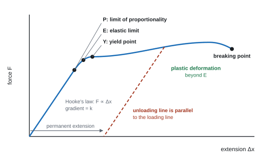
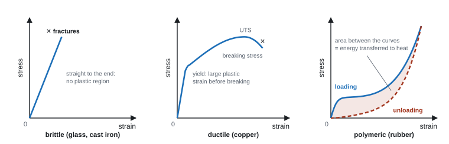
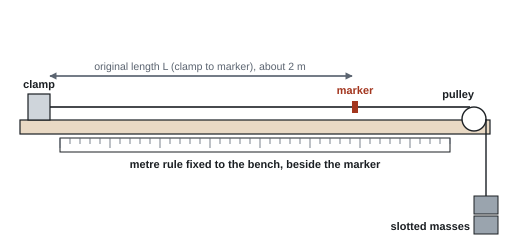
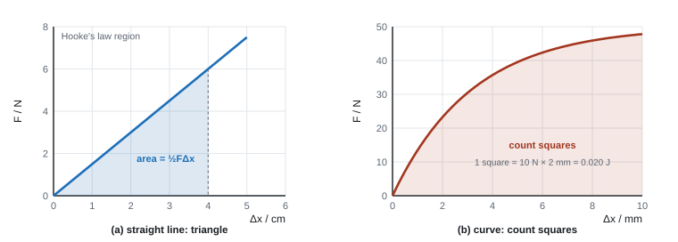

Stretching Materials
Hang a mass on a spring and it stretches; double the mass and it stretches twice as far. Pull a copper wire hard enough and it stays longer when you let go; pull a glass rod and it simply snaps. This topic gives you the language and the graphs to describe all of that: Hooke's law and stiffness for objects, stress, strain and the Young modulus for materials, and the elastic strain energy stored when something is stretched.
Spec27Hooke's law and stiffness
Use ΔF = kΔx, where k is the stiffness of the object.
Hooke's law
ΔF = change in force (N), k = stiffness (spring constant) (N m⁻¹), Δx = extension or compression (m).
- Hooke's law: the extension is proportional to the force applied, up to the limit of proportionality. On a force–extension graph this is a straight line through the origin, and k = gradient.
- Stiffness k = force per unit extension. A large k means a stiff object (hard to stretch).
- k belongs to the object: a longer or thinner wire of the same material has a smaller k. (The Young modulus, 28, belongs to the material.)
- Extension = new length − original length. It also works for compression (Δx = shortening).
a spring
A spring extends from 12.0 cm to 16.0 cm when a 2.0 N weight hangs from it.
Δx = 4.0 cm = 0.040 m. k = ΔF ÷ Δx = 2.0 ÷ 0.040 = 50 N m⁻¹.
With a 3.0 N weight: Δx = 3.0 ÷ 50 = 0.060 m, so the new length = 12.0 + 6.0 = 18.0 cm.
Springs in series and parallel (beyond the spec, but examined)
| Series (end to end) | Parallel (side by side) | |
|---|---|---|
| Force in each spring | the full load | load shared (half each, if identical) |
| Total extension | sum of the extensions | same as each spring's |
| Combined stiffness | 1/k = 1/k₁ + 1/k₂ | k = k₁ + k₂ |
| Two identical springs of stiffness k | k/2 | 2k |
series and parallel
Two 50 N m⁻¹ springs carry a 3.0 N load.
Series: k = 25 N m⁻¹, so Δx = 3.0 ÷ 25 = 0.12 m (each spring carries 3.0 N and stretches 0.060 m).
Parallel: k = 100 N m⁻¹, so Δx = 3.0 ÷ 100 = 0.030 m (each carries 1.5 N).
- "Use of ΔF = kΔx"; gradient "using a triangle over more than half the drawn line".
- Limit of proportionality: "the point beyond which force is no longer proportional to extension" (WPH11 Oct 2020 Q16). Don't also define the elastic limit.
- Series springs (4 marks, WPH11 Oct 2020 Q16): "both springs carry the full load; the extensions add; so for the same force the extension doubles; so the effective stiffness halves".
- "Stiffness" is the one-word answer for what k measures (WPH11 Oct 2025 Q16).
Often asked as: k from a graph or two lengths; new length under a load; springs in series or parallel (MCQs and explanations); four springs sharing a load (each takes a quarter); object v material (k v E); F against total length (gradient still k).
- Using the new length instead of the extension in F = kΔx.
- Thinking the load is shared between springs in series.
- Mixing up the limit of proportionality and the elastic limit.
- Plotting length instead of extension: the line no longer passes through the origin (it shifts right) (WPH11 Oct 2020 Q16).
- Leaving extensions in cm or mm.
- Springs in series and parallel (WPH11 Oct 2020 Q16, Jun 2022 Q7, Jun 2023 Q10).
- k = EA ÷ L links stiffness to the Young modulus (WPH11 Jun 2021 Q17).
- If the gradient changes after loading past the elastic limit, the stiffness has changed (WPH11 Oct 2020 Q16).
A spring has a natural length of 80 mm. When a 300 g mass hangs from it, its length is 104 mm. (a) Calculate the stiffness of the spring. (b) Calculate the length of the spring when the load is increased to 450 g, assuming the limit of proportionality is not exceeded.
Show solution
(a) The force is the weight of the mass, and the extension is the change in length:
\[ F = mg = 0.300 \times 9.81 = 2.94\ \text{N}, \qquad \Delta x = 104 - 80 = 24\ \text{mm} = 0.024\ \text{m} \] \[ k = \frac{F}{\Delta x} = \frac{2.94}{0.024} = 123\ \text{N m}^{-1} \](b) Extension is proportional to the load, so 450 g gives \(\tfrac{450}{300} \times 24 = 36\ \text{mm}\) of extension. The length is \(80 + 36 = 116\ \text{mm}\).
Using ratios like this avoids rounding errors, and it doesn't even need \(g\).
Spec28Stress, strain and the Young modulus
Use tensile or compressive stress = force ÷ cross-sectional area, strain = extension ÷ original length, and Young modulus = stress ÷ strain.
Stress
Strain
Young modulus
| Quantity | Meaning | Unit |
|---|---|---|
| stress σ | force per unit cross-sectional area | Pa (N m⁻²) |
| strain ε | extension ÷ original length | none (a ratio; sometimes as %) |
| Young modulus E | stress ÷ strain (in the straight-line region) | Pa |
- Tensile stress stretches; compressive stress squashes. The same equations apply.
- The Young modulus describes the stiffness of a material. It doesn't depend on the sample's length or thickness. Metals: about 10¹⁰–10¹¹ Pa. Use it to identify a material from a data table.
- Combining the equations: E = Fx ÷ AΔx. Examiners advise working out stress and strain separately first.
- Cross-sectional area from a diameter: A = π(d/2)², with d in metres.
copper wire
A copper wire 2.00 m long and 0.40 mm in diameter extends by 6.5 mm when a 5.0 kg mass hangs from it.
A = π × (0.20 × 10⁻³)² = 1.26 × 10⁻⁷ m². F = 5.0 × 9.81 = 49.1 N.
σ = 49.1 ÷ 1.26 × 10⁻⁷ = 3.9 × 10⁸ Pa. ε = 6.5 × 10⁻³ ÷ 2.00 = 3.25 × 10⁻³.
E = 3.9 × 10⁸ ÷ 3.25 × 10⁻³ = 1.2 × 10¹¹ Pa (120 GPa).
Substitute the definitions of stress and strain into \(E = \sigma/\varepsilon\):
\[ E = \frac{F/A}{\Delta x / x} = \frac{F\,x}{A\,\Delta x} \]This form is the one you use with raw measurements, for example in Core Practical 3.
Rearrange to get \(F/\Delta x\), which is the stiffness:
\[ \boxed{k = \frac{F}{\Delta x} = \frac{EA}{x}} \]A thicker wire (bigger \(A\)) is stiffer, a longer wire (bigger \(x\)) is less stiff, and a stiffer material (bigger \(E\)) gives a stiffer wire, exactly as the thought experiments said.
- "Use of σ = F/A", "use of ε = Δx/x", "use of E = σ/ε": separate marks. "Calculates cross-sectional area" first.
- Defining the Young modulus: the equation alone scores nothing unless every term is defined; "a measure of stiffness" is not enough (WPH11 Jan 2020 Q18).
- E (and breaking stress) are properties of the material, independent of shape and size (WPH11 Jan 2020 Q18).
- One scheme's working writes the force as 1.34 × 10⁶ N where the question gives 13.4 × 10⁶ N (WPH11 Jun 2022 Q12); use the question's value.
Often asked as: stress, strain or E from data; extension from a given E; "decide whether the cable will break" (compare stress with breaking stress); identify the material from a table; scaling MCQs (double the diameter → a quarter of the stress).
- Powers of ten: mm → m, mm² → m² (× 10⁻⁶), MPa (10⁶) and GPa (10⁹) (e.g. 110 MPa used as 110 Pa).
- Using the diameter as the radius, or forgetting to square it. Very common.
- Using the new length instead of the extension for strain.
- Giving strain a unit; leaving the unit off E.
- Using stress ÷ strain at the breaking point instead of in the straight-line region.
- Ratio questions: same material, different sizes → use E being the same (WPH11 Oct 2023 Q8).
- Stiffness of a sample from E: k = EA ÷ L. For the wire above, k = 1.2 × 10¹¹ × 1.26 × 10⁻⁷ ÷ 2.00 = 7.5 × 10³ N m⁻¹ (WPH11 Jun 2021 Q17).
A steel wire of length 2.50 m and diameter 0.50 mm supports a load of 60 N. Its extension is 3.8 mm. Calculate (a) the stress, (b) the strain and (c) the Young modulus of the steel.
Show solution
(a) Cross-sectional area from the diameter (\(r = 0.25\ \text{mm}\)):
\[ A = \pi r^2 = \pi (0.25\times10^{-3})^2 = 1.96\times10^{-7}\ \text{m}^2 \] \[ \sigma = \frac{F}{A} = \frac{60}{1.96\times10^{-7}} = 3.06\times10^{8}\ \text{Pa} \](b) \(\varepsilon = \dfrac{\Delta x}{x} = \dfrac{3.8\times10^{-3}}{2.50} = 1.52\times10^{-3}\)
(c) \(E = \dfrac{\sigma}{\varepsilon} = \dfrac{3.06\times10^{8}}{1.52\times10^{-3}} = 2.0\times10^{11}\ \text{Pa}\) (200 GPa).
The classic slip is to use the diameter instead of the radius in \(\pi r^2\), which makes the area four times too big.
When a 70 kg runner lands, the force on one thigh bone (femur) can be about three times their weight. The femur is 0.45 m long, with a cross-sectional area of 3.3 × 10⁻⁴ m² and a Young modulus of 17 GPa. Calculate the compressive stress and the amount the bone shortens.
Show solution
\[ F = 3 \times 70 \times 9.81 = 2060\ \text{N}, \qquad \sigma = \frac{F}{A} = \frac{2060}{3.3\times10^{-4}} = 6.2\times10^{6}\ \text{Pa} \] \[ \varepsilon = \frac{\sigma}{E} = \frac{6.2\times10^{6}}{17\times10^{9}} = 3.7\times10^{-4} \] \[ \Delta x = \varepsilon x = 3.7\times10^{-4} \times 0.45 = 1.7\times10^{-4}\ \text{m} \approx 0.17\ \text{mm} \]Tiny, and the stress is far below the breaking stress of bone (well over 100 MPa in compression), which is why bones survive running.
Spec29Force–extension graphs: elastic and plastic deformation
(a) Draw and interpret force–extension and force–compression graphs. (b) Use the terms limit of proportionality, elastic limit, yield point, elastic deformation and plastic deformation, and apply them to these graphs.

The key points (learn these definitions)
| Term | Meaning |
|---|---|
| Limit of proportionality (P) | the point beyond which force is no longer proportional to extension (the graph stops being a straight line) |
| Elastic limit (E) | the force beyond which the object will not return to its original length when the force is removed |
| Yield point (Y) | the point where the material suddenly stretches a lot (a large increase in extension) for little or no increase in force; the extra extension is plastic |
| Elastic deformation | the object returns to its original shape and size when the force is removed |
| Plastic deformation | the object is permanently deformed: it does not return to its original shape when the force is removed |
- P and E are close together, but they are different points: a material can still behave elastically a little beyond P.
- Unloading: below the elastic limit, the unloading line retraces the loading line back to the origin. Beyond it, the unloading line is (for a metal) parallel to the original straight line and meets the axis at a permanent extension.
- Compression graphs look similar, with "compression" on the x-axis (plotted as positive values).
- A graph that doesn't start at the origin (e.g. an initial load to straighten the wire): use changes in force and extension.
- Elastic limit: "the force / stress beyond which the cable does not return to its original length when the force is removed" (WPH11 Jun 2022 Q12).
- Elastic deformation: "returns to its original size / shape / length when the force is removed" (WPH11 Jun 2025 Q15); "or the unloading line returns to the origin" (WPH11 Jan 2024 Q11).
- Yield point: "a large increase in strain for little or no increase in stress" and "the extension is plastic"; both parts are needed (WPH11 Jun 2023 Q20).
- Plastic: "remains deformed after the force is removed" (WPH11 Oct 2019 Q16).
Often asked as: define one of the five terms (1–2 marks); mark P or E on a graph; loading and unloading curves (rubber band); compression graphs (values in nm); MCQs ("beyond the elastic limit → permanent deformation").
- Leaving out "when the force is removed" from the elastic definitions. That's the mark.
- Giving Hooke's law or the elastic limit when asked to define elastic deformation.
- Treating the yield point as the elastic limit: the spec treats them as different points.
- Forgetting to subtract the original length when plotting extension.
- The area between the loading and unloading curves = energy transferred to heat in the material (hysteresis), e.g. a rubber band (WPH11 Jan 2024 Q11). See 30 and 32.
- After plastic deformation, the gradient (stiffness) can change (WPH11 Oct 2020 Q16).
Spec30Stress–strain graphs and breaking stress
Draw and interpret tensile or compressive stress–strain graphs, and understand the term breaking stress.
Reading a stress–strain graph
- Gradient of the straight part = Young modulus (stiffness of the material). Steeper = stiffer.
- Limit of proportionality, elastic limit, yield point: the same meanings as on a force–extension graph, but in terms of stress.
- Breaking stress: the stress at which the material breaks (fractures), the end of the graph.
- Ultimate tensile stress (UTS): the highest stress on the graph. For a ductile metal, it is a little above the breaking stress, because the wire "necks" (thins) before it snaps.
- Area under the graph = energy per unit volume (32). A large area means the material absorbs a lot of energy before breaking (tough).
Because the axes are stress and strain, the graph doesn't depend on the sample's size: it describes the material.

Three types of behaviour
| Behaviour | Graph shape | Examples |
|---|---|---|
| Brittle | straight line (obeys Hooke's law) right up to fracture; no plastic region | glass, cast iron, ceramics, concrete |
| Ductile | straight, then yields and shows a large plastic region before breaking; can be drawn into wires | copper, mild steel |
| Polymeric (rubber) | not a straight line: soft at first, stiffening at large strain; very large elastic strain; unloading curve lies below the loading curve | rubber, many polymers |
The spec doesn't ask you to define brittle, ductile, tough or hard, but questions use the words and expect you to read them off a graph: stiffness = initial gradient, strength = breaking stress (or UTS), toughness = area under the curve.
breaking force
The copper wire in 28 (A = 1.26 × 10⁻⁷ m²) has a breaking stress of 2.2 × 10⁸ Pa. What is the largest mass it can hold?
F = σA = 2.2 × 10⁸ × 1.26 × 10⁻⁷ = 27.7 N. m = F ÷ g = 27.7 ÷ 9.81 = 2.8 kg.
A thicker wire of the same copper has the same breaking stress but needs a larger force to break it.
- Comparisons must be comparative and quote values from the graph: "higher breaking stress", "stiffer / greater gradient" ("withstands more" is ambiguous) (WPH11 Jan 2019 Q17).
- Same material, different diameter: "breaking stress is unchanged"; larger force needed to break (WPH11 Jun 2023 Q20).
- MCQ: breaking stress at the end of each line; yield stress at the top of the initial straight section (WPH11 Jan 2024 Q9).
Often asked as: compare two materials or a material in tension and compression from their graphs; read a breaking stress and calculate the breaking force; sketch a stiffer material's line; 6-mark "how does adding glue change stiffness, strength and toughness?" (WPH11 Jan 2020 Q14).
- Using the stress at the elastic limit instead of the breaking stress.
- Confusing Young modulus (stiffness) with strength (breaking stress).
- Describing without quoting values from the graph.
- Answering from chemistry knowledge (glue, cement) instead of reading the graph.
- UTS v breaking stress, and reading strength, stiffness and toughness from a graph (WPH11 Jan 2020 Q14).
- Pre-stressed concrete: steel rods stretched while the concrete sets keep the concrete compressed, so it can take larger tensile loads before cracking (WPH11 Oct 2019 Q16).
- Atomic picture: in the plastic region, layers of atoms slide over each other; at fracture, bonds break and atoms separate.
The stress–strain graph for a metal is a straight line from the origin to a stress of 240 MPa at a strain of 0.0020, after which it curves. (a) Calculate the Young modulus. (b) A wire of this metal is 2.0 m long with a cross-sectional area of 0.50 mm². Calculate the largest force for which it obeys Hooke's law, and the extension at that force.
Show solution
(a) \(E = \dfrac{240\times10^{6}}{0.0020} = 1.2\times10^{11}\ \text{Pa}\)
(b) Convert the area: \(0.50\ \text{mm}^2 = 0.50\times10^{-6}\ \text{m}^2\) (1 mm² = 10⁻⁶ m²).
\[ F = \sigma A = 240\times10^{6} \times 0.50\times10^{-6} = 120\ \text{N} \] \[ \Delta x = \varepsilon x = 0.0020 \times 2.0 = 4.0\times10^{-3}\ \text{m} = 4.0\ \text{mm} \]Spec31Core Practical 3: the Young modulus of a material
Determine the Young modulus of a material (usually a metal wire).

Core practical 3: method in brief
- Clamp one end of a long, thin wire (about 2 m) to the bench; pass the other end over a pulley and hang a mass hanger on it. Start with a small load to straighten the wire and take up the slack.
- Fix a marker (tape or a small flag) on the wire near the pulley, above a metre rule fixed to the bench.
- Measure the original length L from the clamp to the marker with a metre rule or tape.
- Measure the diameter with a micrometer at several places along the wire, at two orientations at each place (right angles); take a mean. A = π(d/2)².
- Add masses in equal steps (e.g. 100 g). Record the marker's position each time; extension = new reading − original reading.
- Unload in steps and re-read, to check the wire returns (still elastic) and to give repeat readings.
- Plot force (mg) against extension. In the straight part, gradient = F/Δx, and E = gradient × L ÷ A. (Or plot stress against strain: gradient = E.)
Safety: wear eye protection (a snapping wire can whip back); put a box of sand or a cushion under the masses; keep feet clear.
Vertical (Searle's) version: two wires hang from one support. The reference wire carries a constant load; a vernier scale between them measures the test wire's extension. This cancels the effects of temperature and of the support sagging.
Why a long, thin wire?
- For a given force, extension ∝ L ÷ A. A long wire gives a bigger extension, so the percentage uncertainty in the extension is smaller (the rule's absolute uncertainty stays the same).
- A thin wire needs a smaller force for a measurable extension, and reaches the stresses needed with ordinary slotted masses.
Uncertainties
- Diameter: use a micrometer (resolution 0.01 mm). Vernier calipers (0.1 mm or 0.02 mm) aren't good enough for a 0.4 mm wire: d is squared, so its percentage uncertainty doubles in A.
- Extension: read the marker at eye level against the rule (avoid parallax); a vernier scale gives better resolution.
- Use the gradient of the graph rather than one pair of readings.
E and its uncertainty
L = 2.00 m, d = 0.40 mm, and the gradient of the force–extension line is 7.5 × 10³ N m⁻¹.
A = π × (0.20 × 10⁻³)² = 1.26 × 10⁻⁷ m². E = 7.5 × 10³ × 2.00 ÷ 1.26 × 10⁻⁷ = 1.2 × 10¹¹ Pa.
Percentage uncertainties for a single reading: d ± 0.01 mm → 2.5 %, so A → 2 × 2.5 = 5.0 %. L ± 2 mm → 0.1 %. Extension 6.5 mm ± 0.5 mm → 7.7 %.
Total ≈ 5.0 + 0.1 + 7.7 ≈ 13 %. The extension is the biggest contributor, so a longer wire or a vernier scale would help most.
- Diameter (3 marks): "micrometer (screw gauge) or digital calipers"; "at different places along the wire and different orientations"; "calculate a mean" (WPH11 Jun 2019 Q16, Jan 2024 Q17). Vernier calipers "do not have enough resolution" (WPH11 Jan 2021 Q16).
- Safety: "goggles, because the wire may break" (not helmets, gloves or shoes) (WPH11 Jan 2024 Q17).
- Full method (6-mark, WPH11 Jun 2024 Q16): original length clamp to marker; extension from the marker's movement (new − original); weight from mg; area from the diameter; stress and strain (or force–extension graph); E from stress ÷ strain or the gradient.
- Gradient: use more than half the drawn line; the origin may be used as a point if the line passes through it (WPH11 Jan 2023 Q14).
- Resolution: "a vernier scale has a better resolution, so a smaller percentage uncertainty" (WPH11 Jan 2024 Q17).
Often asked as: how to measure the diameter; safety; why a long thin wire (6-mark); full method (6-mark); E from a graph that doesn't start at the origin; resolution and percentage uncertainty.
- Measuring the diameter with a ruler or vernier, or only once.
- Using "the centre of mass is in the middle" to check the wire is uniform: scored 0 (WPH11 Jan 2024 Q17).
- Safety answers about anything except the snapping wire and falling masses.
- Not noticing the graph doesn't start at the origin: use the change in force and the change in extension.
- Using the words accuracy, precision, resolution and uncertainty as if they mean the same thing.
- Precise use of practical words: resolution is the smallest change an instrument can show; uncertainty is the range within which the true value is likely to lie; precision is how close repeated readings are; accuracy is how close a result is to the true value (WPH11 Jan 2024 Q17).
- Draw a tangent at the origin to find E when the straight-line part is short (WPH11 Jan 2019 Q17).
In Core Practical 3 a copper wire has an original length of 2.50 m. Its diameter is measured as 0.38 ± 0.01 mm. A graph of load \(F\) against extension \(\Delta x\) is a straight line through the origin with a gradient of \(5.2\times10^{3}\ \text{N m}^{-1}\). (a) Calculate the Young modulus of copper. (b) Calculate the percentage uncertainty in the cross-sectional area.
Show solution
(a) The gradient is \(F/\Delta x = EA/x\), so \(E = \text{gradient} \times x / A\).
\[ A = \frac{\pi d^2}{4} = \frac{\pi (0.38\times10^{-3})^2}{4} = 1.13\times10^{-7}\ \text{m}^2 \] \[ E = \frac{5.2\times10^{3} \times 2.50}{1.13\times10^{-7}} = 1.1\times10^{11}\ \text{Pa} \](b) Percentage uncertainty in \(d\) = \(0.01/0.38 \times 100 = 2.6\%\). Since \(A \propto d^2\), the percentage uncertainty in \(A\) is \(2 \times 2.6 = 5.3\%\). That is far bigger than the uncertainty in the 2.50 m length, which is why the diameter has to be measured so carefully.
Spec32Elastic strain energy
Calculate the elastic strain energy in a deformed sample, using ΔEel = ½FΔx and from the area under a force–extension graph, for linear and non-linear graphs.
Energy = area under the force–extension graph
The work done stretching a sample is stored as elastic strain energy (as long as the deformation is elastic). The work done = the area under the force–extension graph, for any shape of graph.

For a straight line through the origin (Hooke's law):
Elastic strain energy
Using F = kΔx gives two other forms (not on the spec, but expected):
Elastic strain energy in terms of stiffness
The ½ is there because the force rises steadily from 0 to F: the average force is ½F.
a spring
The 50 N m⁻¹ spring from 27 stretched 0.040 m by a 2.0 N force: ΔEel = ½ × 2.0 × 0.040 = 0.040 J (same as ½ × 50 × 0.040²).
catapult (energy conservation)
A catapult (k = 200 N m⁻¹) is pulled back 0.15 m and fires a 20 g stone. Find the launch speed, assuming all the elastic energy becomes KE.
Eel = ½ × 200 × 0.15² = 2.25 J. ½ × 0.020 × v² = 2.25 → v = √(2 × 2.25 ÷ 0.020) = 15 m s⁻¹.
Non-linear graphs: estimate the area
- Count squares: count the squares under the curve (estimate the part-squares), then multiply by the energy of one square = (force per square) × (extension per square), in N and m.
- Or split the area into trapezia, triangles and rectangles.
- Graph (b) above: one large square = 10 N × 2 mm = 10 × 0.002 = 0.020 J. About 17 squares lie under the curve, so E ≈ 17 × 0.020 = 0.35 J.
- Don't treat a curve as a straight line. In one question, a triangle approximation gave a 25 % reduction in energy where counting squares gave the expected 12–15 % (WPH11 Jan 2019 Q17).
- Between two states on a straight line (e.g. from 85 N to 140 N): work out ½FΔx at each and subtract. It is not ½ × ΔF × Δx (WPH11 Jun 2025 Q15).
Stress–strain graphs
- The area under a stress–strain graph = energy stored per unit volume (J m⁻³). In the linear region it's ½σε.
- Multiply by the sample's volume (A × L) to get the energy. For the copper wire in 28: ½ × 3.9 × 10⁸ × 3.25 × 10⁻³ = 6.3 × 10⁵ J m⁻³; × (1.26 × 10⁻⁷ × 2.00) m³ = 0.16 J, the same as ½FΔx = ½ × 49.1 × 6.5 × 10⁻³.
Loading and unloading (hysteresis)
- If the unloading curve lies below the loading curve (rubber, or a metal past its elastic limit), not all the work done is given back. The area between the curves is the energy transferred to heat in the material.
- For plastic deformation, the work done goes into permanently rearranging the material, not into elastic strain energy.
Below the limit of proportionality the force–extension graph is a straight line from the origin to the point \((\Delta x, F)\).
The area under it is a triangle with base \(\Delta x\) and height \(F\):
\[ E_\text{el} = \text{area} = \tfrac{1}{2} \times \text{base} \times \text{height} \]\[ \boxed{E_\text{el} = \tfrac{1}{2} F \Delta x} \]Another way to see the ½: the force rises steadily from 0 to \(F\), so the average force during the stretch is \(F/2\), and work = average force × distance.
Start from the area result:
\[ E_\text{el} = \tfrac{1}{2} F \Delta x \]Hooke's law gives \(F = k\Delta x\). Substitute it in:
\[ E_\text{el} = \tfrac{1}{2}(k\Delta x)\,\Delta x \;\Rightarrow\; \boxed{E_\text{el} = \tfrac{1}{2} k \Delta x^2} \]Energy goes as the square of the extension: stretch a spring twice as far and it stores four times the energy.
- "Use of ΔEel = ½FΔx"; "determines area under graph between …" with both values read (WPH11 Jun 2025 Q15).
- Area under stress–strain: "the elastic strain energy stored per unit volume"; then × volume (WPH11 Jan 2021 Q16, Jun 2026 Q19). Allow "elastic potential energy" for elastic strain energy.
- Deriving F² ÷ 2k (3 marks): "Eel = area under the graph; area = ½FΔx and Δx = F/k; so Eel = F²/2k" (WPH11 Oct 2025 Q15).
- Energy dissipated in a rubber band = area between the curves, e.g. a range 0.0425–0.053 J (WPH11 Jan 2024 Q11).
Often asked as: energy from a straight-line graph; area under a curve by counting squares; percentage change in energy absorbed; energy per unit volume from stress–strain; ½kx² = ½mv² for a launcher; derive F²/2k; energy lost in a loading–unloading loop.
- Forgetting the ½ (scored zero in WPH11 Jan 2022 Q16).
- Treating a curve as a straight line and using ½FΔx.
- Not converting cm, mm or nm to metres.
- Using ΣF = ma with suvat during a spring release: the force isn't constant, so use energy.
- Saying the stress–strain area equals the energy (it's energy per unit volume: multiply by the volume).
- Forgetting to turn a result into a percentage when asked.
- ½k(Δx)² and F² ÷ 2k (WPH11 Oct 2025 Q15, Jan 2022 Q16).
- Hysteresis: area between loading and unloading curves = energy transferred to heat (WPH11 Jan 2024 Q11).
- Elastic energy combined with GPE and KE in one conservation question (WPH11 Jan 2026 Q19).
A catapult's elastic obeys Hooke's law. It is pulled back 0.15 m by a force that rises to 60 N, and it fires a 20 g stone. (a) Calculate the elastic strain energy stored. (b) Calculate the maximum possible speed of the stone. (c) Explain why the real speed will be lower.
Show solution
(a) \(E_\text{el} = \tfrac{1}{2} F\Delta x = \tfrac{1}{2} \times 60 \times 0.15 = 4.5\ \text{J}\)
(b) At most all of it becomes kinetic energy of the stone:
\[ \tfrac{1}{2}mv^2 = 4.5 \;\Rightarrow\; v = \sqrt{\frac{2 \times 4.5}{0.020}} = 21\ \text{m s}^{-1} \](c) Some energy becomes kinetic energy of the elastic itself and some is dissipated as heat in the rubber, so the stone gets less than 4.5 J.
On a force–extension graph for a rubber band, each grid square is 0.5 N high and 1.0 cm wide. Up to an extension of 8.0 cm, a student counts 38 squares under the curve. Estimate the work done in stretching the band.
Show solution
One square represents \(0.5\ \text{N} \times 0.010\ \text{m} = 5.0\times10^{-3}\ \text{J}\).
\[ W \approx 38 \times 5.0\times10^{-3} = 0.19\ \text{J} \]Don't use \(\tfrac{1}{2}F\Delta x\) here: the graph is curved, so the triangle would give the wrong area.
Quick checks
Wires P and Q are made of the same metal. P is twice as long as Q and has twice the diameter. The same force is applied to each, within the limit of proportionality. What is (extension of P) / (extension of Q)?
\(\Delta x = Fx/(AE)\). Doubling \(x\) doubles the extension, but doubling the diameter makes the area four times bigger, which divides it by 4. Overall \(2/4 = 0.5\).
Which statement describes the elastic limit?
The first option is the limit of proportionality, the third is (related to) the breaking stress and the fourth describes the yield point.
A spring of stiffness 200 N m⁻¹ is stretched by 5.0 cm, within its limit of proportionality. How much elastic strain energy does it store?
\(E_\text{el} = \tfrac{1}{2}k\Delta x^2 = \tfrac{1}{2} \times 200 \times 0.050^2 = 0.25\ \text{J}\). 0.50 J forgets the ½; 250 J forgets to convert 5.0 cm into metres.
Which of these is a correct unit for the Young modulus?
Stress is in N m⁻² (Pa) and strain has no unit, so stress/strain is in N m⁻². N m⁻¹ is the unit of stiffness \(k\), which belongs to an object, not a material.
A wire is loaded beyond its elastic limit and then the load is removed. Which best describes the unloading part of its force–extension graph?
The wire contracts with the same stiffness as it had in the elastic region, so the unloading line is parallel to the original straight line, but it doesn't get back to its original length: there is a permanent extension.
A rubber band's force–extension graph curves so that it lies below the straight line joining the origin to its final point (\(\Delta x\), \(F\)). The energy stored is
The energy is always the area under the graph. If the curve sags below the straight line, the area under it is less than the triangle \(\tfrac{1}{2}F\Delta x\). Estimate it by counting squares.